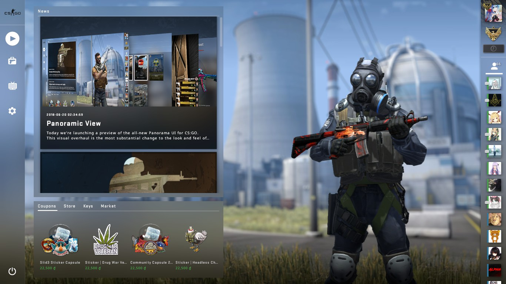
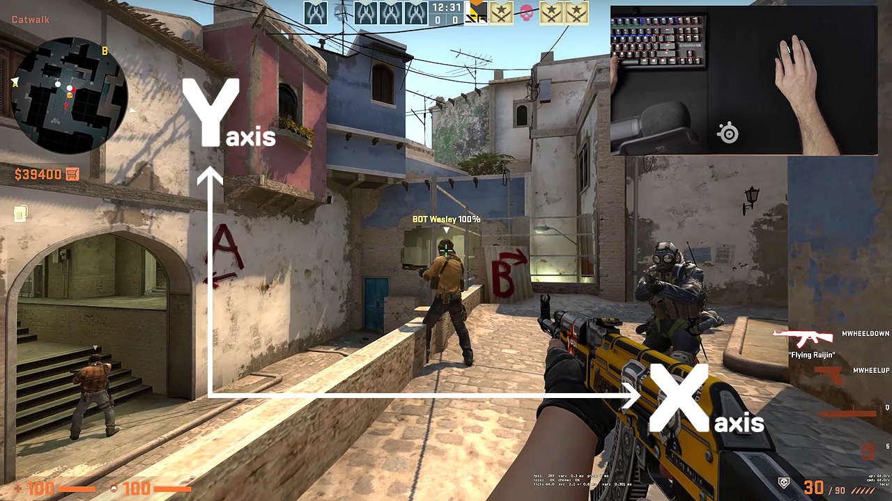

Counter Strike Global Offensive (CSGO) is a competetive first person shooter with two competing teams. The first team is the terrorists, and their goal is to plant the bomb on one of two bombsites. The second team is the counter-terrorists, and their goal is to prevent the terrorists from planting the bomb. Each team is made up of five players, and they must work together to either attack or defend bomb sites. This guide will help all the new gamers interested in CSGO with basic gameplay fundamentals.
Why Play CSGO?
CSGO is a great game that allows for a variety of play styles. Some players enjoy casually playing a game with some friends, while other enjoy trying to compete against the best players. Either play style is completely valid, and, of course, there are play styles that lie somewhere in between the two. You'll just have to find what kind of play style brings you the most joy. Hopefully after reading this guide, you'll be able to pick up the game and discover how you want to play it.
Basic Gameplay Overview
As stated previously, CSGO is a first person shooter that involves two teams of five players competing against one another. The teams spawn on opposite ends on the map; the counter-terrorists try to stop the terrorists from planting a bomb on a bombsite. Each map contains two bombsites, usually opposite to one another. On the other hand, the terrorists try to plant a bomb on a bombsite. Once the bomb is planted, the terrorists defend the site while the counter-terrorists attempt to defuse the bomb. The bomb ticks for 45 seconds, and if the counter-terrorists haven't defused the bomb, it explodes and the terrorists win the round. After 15 rounds, the teams swap sides; the first team to 16 wins the game.
 Home screen for CSGO displayed after launching the game.Now that you have an understanding of game's mechanics, it's time to learn how to actually move and shoot! For an extensive list of all the controls in CSGO, make sure to check out the settings and go through them. You can navigate to the settings by clicking the cog from the image above. I recommend that you join a private lobby in order to learn and practice these controls.
Movement
Movement in CSGO is very similar to other computer games. The "W" key causes you to move foward, "A" causes you to move foward, "D" causes you to move left, and "S" causes you to move backwards. Automatically, your character is always running; running causes your footsteps to be much louder to enemies, which can give away your position. Holding the "Shift" key causes your character to walk instead of running. Walking makes your footsteps inaudible, so enemies have a harder time tracking you. Holding "Ctrl" has the same effect of holding "Shift," but it always causes your character to crouch. Your character can also jump by pressing the space key.
Weapons
Movement is great and all, but movement alone does not kill enemies, weapons do. In CSGO, you can have a primary weapon, secondary weapon, knife, and grenade(s). These map to the keys "1", "2", "3", and "4" respectively. All characters spawn with a secondary weapon and knife, but primary weapons and grenades must be bought or picked up from dead characters. Weapons can be bought by pressing "B" in the spawn and clicking the desired weapon in the buy menu.
Aiming
Arguably the most important asepct of all shooter games is aiming. Good aim is required in order to kill enemies before they can kill you. Aiming is simple, moving your mouse in a certain direction causes your character to look towards that direction. If your mouse moves up, your character looks up, if your mouse moves to the left, your character looks to the left. You can then shoot your weapon by left-clicking. This mouse movement will likely feel unfamiliar, so I recommend that you practice this in a private game.
 Image showing the axes in CSGO for aiming.Movement and Aiming
Movement and aiming are very closely tied to one another, especially in CSGO. CSGO has a somewhat unique mechanic where players that are moving do not shoot where they are aiming. For example, if I am standing still, my bullet will hit almost exactly where my crosshair was, but if I am running, my bullet has very little chance of hitting where my crosshair was. This topic would require its own artcile, so if you are curious, I recommend the video below.
YouTube video that goes further into the topic of movement and aiming.Importance Mouse Sensitivity
Mouse sensitivity is the rate at which the movement of your mouse corresponds to the movement of your pointer on the display, or, in our case, the movement of your character's head. A high mouse sensitivity is where your character moves their head very fast compared to the mouse movement and low mouse sensitivity is just the opposite. Choosing between a high and low mouse sensitivity is purely based on the player's preference. The only way to find the sensitivity you like is to adjust it and try it.
How to Effectively Place your Crosshair
In CSGO, shooting someone mere milliseconds before they shoot can be the deciding factor of the engagement. For this reason, placing your crosshair in an effective spot is very important. The closer your crosshair is to the enemy at the start of the engagement, the less time it takes to move it onto them. The idea of placing your crosshair where enemies are likely to be is called crosshair placement. Basically, the concept boils down to three rules:
- Aim your crosshair at head level.
- Place your crosshair on corners.
- Place your crosshair in positions where the enemy is likely to be.
Article written by Carter Williams · Images by CSGO Wiki